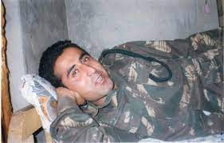
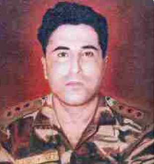

Vikram Batra
1974 - 1999
Captain Vikram Batra
Captain Vikram Batra, PVC (9 September 1974 – 7 July 1999) was an Indian Army officer. He was posthumously awarded the Param Vir Chakra, the highest Indian military decoration, for his actions during the Kargil War; on 7 July 1999, Batra was killed while fighting Pakistani troops around Area Ledge, Point 4875, in the Kargil district of erstwhile Jammu and Kashmir.
Early life and education
Batra was born on 9 September 1974 in a small town in Palampur, Himachal Pradesh to a Punjabi Hindu family. He was the third child of Girdhari Lal Batra, a government school principal, and Kamal Kanta Batra, a school teacher. He was the elder of twin sons, born fourteen minutes before his brother, Vishal. The twins were nicknamed: 'Luv' (Vikram) and 'Kush' (Vishal), after the twin sons of the Hindu deity Rama, by their mother who was a professed devotee of Rama.[1] He had two sisters: Seema and Nutan.[2] As a young child, Batra received his primary education under the tutelage of his mother.[3][4] He then attended the D.A.V. Public School in Palampur, where he studied up to middle standard.[3] He received his senior secondary education at Central School in Palampur.
Military Career
Batra joined the Indian Military Academy (IMA) at Dehradun, in June
1996 in the Manekshaw Battalion. After completing his 19-month
training course, he graduated from the IMA on 6 December 1997 and
was commissioned as a lieutenant into the Indian Army. He was
commissioned into the 13th battalion of the Jammu and Kashmir Rifles
(13 JAK Rif). After commissioning, he was sent to Jabalpur, Madhya
Pradesh for regimental training. The training lasted one month, from
December 1997 to the end of January 1998.
On completion of this training he got his first posting at Sopore in
Baramulla district of Jammu and Kashmir, an area with significant
militant activity. In mid-March 1998, he was sent to the Infantry
School at Mhow, Madhya Pradesh, where young Army officers are
trained, for the Young Officer's Course. This training lasted five
months until September 1998. Following completion of the course and
being awarded alpha grading, he joined his battalion in Sopore in
October 1998.

During his posting in Sopore, Batra had several encounters with
militants. In one of those encounters when Batra was leading an
ambush with his platoon into an area of dense forest, he escaped
when bullet fired by a militant grazed his shoulder and struck one
of Batra's men behind him, who was killed. Batra ordered his men to
fire on the militants, and by morning all of the militants were
killed. He believed that the bullet was meant for him and not his
colleague.
In January 1999, Batra was sent on a Commando Course at Belgaum,
Karnataka. The course lasted for two months and at the end of it, he
was awarded the highest grading — the Instructor's Grade.
Every time when he came home to Palampur on leave, he would visit
the Neugal Cafe. Batra last came home on leave from the army in
1999, during the Holi festival for a few days.

The town of Dras, the second coldest inhabited place in the world
after Siberia, where temperatures fall as low as −60 degrees Celsius
in winter. After his leave, he returned to join his battalion in
Sopore. The 13 JAK Rif, after completing its counter-insurgency
operations tenure in Kashmir under 192 Mountain Brigade of 8
Mountain Division, received orders to proceed to Shahjahanpur, Uttar
Pradesh. The battalion's advance party under Major Yogesh Kumar
Joshi had reached its destination, when on 5 June, because of the
outbreak of the war, its deployment orders were changed and the
battalion received orders to move to Dras.
Batra
informed his parents about his movement and assured them they need
not worry about him. He would call his parents at least once in ten
days. The last phone call he made was on 29 June 1999. This was the
last time that Batra spoke to his mother.
Beginning his service as a lieutenant, he rose to the rank of
Captain.